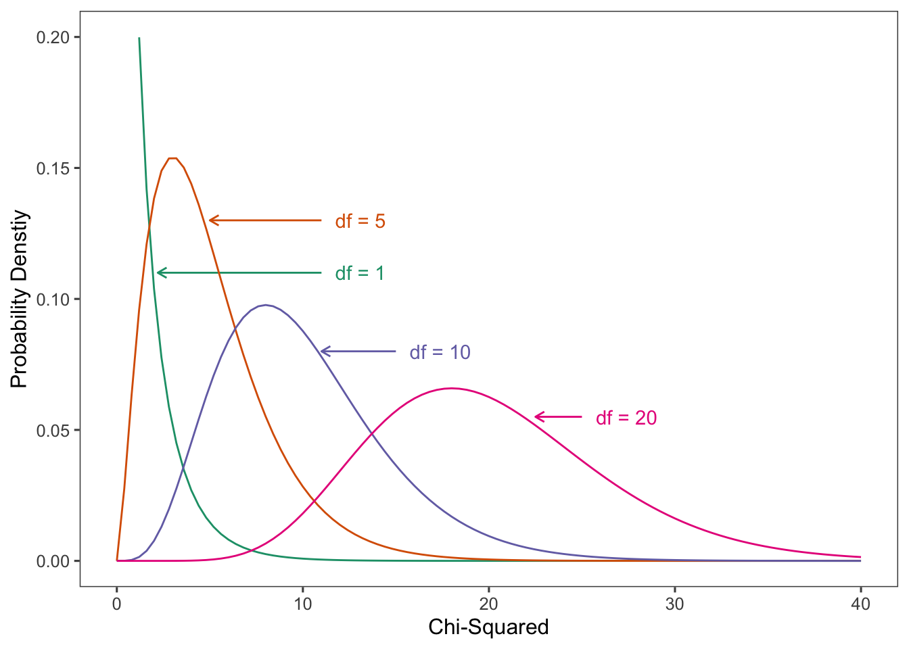
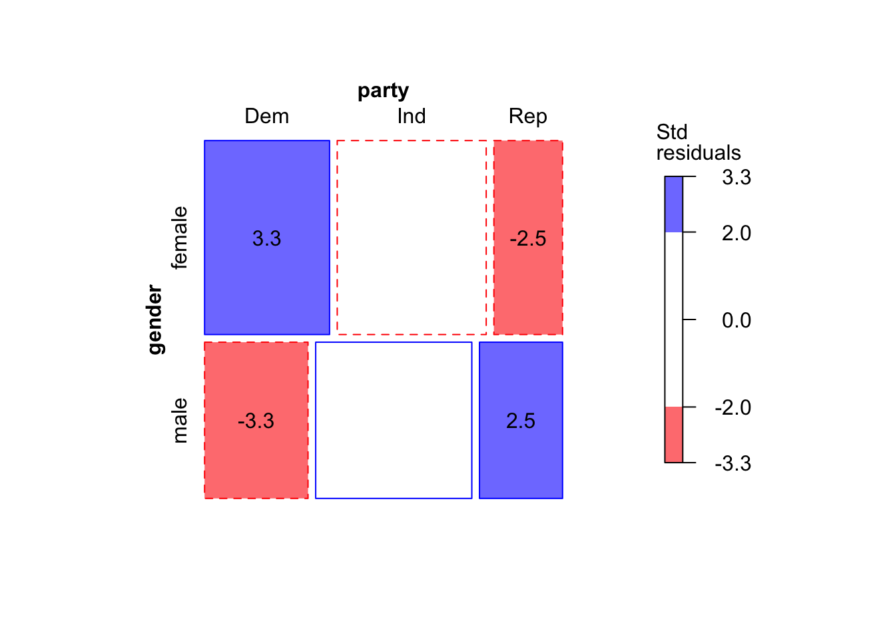

2 Analyzing Contingency Tables
table2_1 <- data.frame(Gender = c("Female", "Female", "Male", "Male"),
Belief = c(" Yes", "No", " Yes", "No"),
Count = c(1230, 357, 859, 413))
addmargins(xtabs(Count ~ Gender + Belief, table2_1)) Belief
Gender Yes No Sum
Female 1230 357 1587
Male 859 413 1272
Sum 2089 770 28592.1 Probability Structure for Contingency Tables
2.1.1 Joint, Marginal, and Conditional Probabilities
\[ \hat{\pi}_{ij} = n_{ij}/n \]
| Sex | Yes | No or undecided | |
|---|---|---|---|
| Females | \(\pi11\) | \(\pi12\) | \(\pi1+\) |
| Males | \(\pi21\) | \(\pi22\) | \(\pi2+\) |
| \(\pi{{+}}1\) | \(\pi{{+}}2\) |
\[ \pi_{1+} = \pi_{11} + \pi_{12}\ \ \mathrm{and}\ \ \pi_{+1} = \pi_{11} + \pi_{21} \] ### 2.1.2 Example: Sensitivity and Specificity
\[ \ \ \ \ \ \ \ \ \ \ \ \ \ \ \ \ \ \ \ \ \ \ prediction\ |\ truth \\ \mathrm{Sensitivity} = P(Y=1\ |\ X = 1), \\ \mathrm{Sepecificity} = P(Y=2\ |\ X = 2) \] ### 2.1.3 Statistical Independence of Two Categorical Variables
\[ P(X = i, Y = j) = P(X = i) P(Y = j)\ \mathrm{for}\ i = 1, ..., r\ \mathrm{and}\ j = 1,..., c. \]
2.1.4 Binomial and Multinomial Sampling
2.2 Comparing Proportions in 2 x 2 Contingency Tables
2.2.1 Difference of Proportions
\[ SE = \sqrt{\frac{\hat{\pi}_1 - (1 - \hat{\pi}_1)}{n_1} + \frac{\hat{\pi}_2 - (1 - \hat{\pi}_2)}{n_2}} \]
\[ (\hat{\pi}_1 - \hat{\pi}_2) \pm z_{\alpha/2}(SE) \]
2.2.2 Example: Aspirin and incidence of Heart Attacks
table2_2 <- tibble(Group = c("Placebo", "Placebo", "Aspirin", "Aspirin"),
`Myocardial Infarction` = c(" Yes", "No", " Yes", "No"),
Count = c(189, 10845, 104, 10933))
addmargins(xtabs(Count ~ Group + `Myocardial Infarction`, table2_2)) Myocardial Infarction
Group Yes No Sum
Aspirin 104 10933 11037
Placebo 189 10845 11034
Sum 293 21778 22071\[ SE = \sqrt{\frac{(0.0171) (0.9829)}{11,034} + \frac{(0.0094) - (0.9906)}{11,0037}} = 0.0015 \]
2.2.3 Ratio of Proportions (Relative Risk)
\[\mathrm{Relative\ risk} = \frac{\pi_1}{\pi_2}\]
2.2.4 Using R for Comparing Proportions in 2 x 2 Tables
2-sample test for equality of proportions without continuity
correction
data: c(189, 104) out of c(11034, 11037)
X-squared = 25.014, df = 1, p-value = 5.692e-07
alternative hypothesis: two.sided
95 percent confidence interval:
0.004687751 0.010724297
sample estimates:
prop 1 prop 2
0.01712887 0.00942285
data:
95 percent confidence interval:
0.0047168 0.0107885
data:
95 percent confidence interval:
1.4339 2.30472.3 The Odds Ratio
\[\mathrm{odds} = \pi/(1-\pi).\]
\[\pi = \mathrm{odds/(odds+1)}.\]
\[\theta =\frac{\mathrm{odds_1}}{\mathrm{odds_2}} = \frac{ \pi_1/(1-\pi_1)}{\pi_2/(1-\pi_2)},\]
2.3.1 Properties of the Odds Ratio
\[\theta=\frac{\pi_{11}/\pi_{12}}{\pi_{21}/\pi_{22}} = \frac{\pi_{11}\pi_{22}}{\pi_{12}\pi_{21}}.\]
\[\hat{\theta}=\frac{\hat{\pi}_1/(1-\hat{\pi}_1)}{\hat{\pi}_2/(1-\hat{\pi}_2)}=\frac{n_{11}/n_{12}}{n_{21}/n_{22}} = \frac{n_{11}n_{22}}{n_{12}n_{21}}.\]
2.3.2 Example: Odds Ratio for Aspirin and Hart Attacks
2.3.3 Inference for Odds Ratios and Log Odds Ratios
\[SE = \sqrt{\frac{1}{n_{11}}+ \frac{1}{n_{12}}+ \frac{1}{n_{21}}+\frac{1}{n_{22}}}.\]
\[log\ \hat{\theta} \pm z_{\alpha/2}(SE).\]
\[SE = \sqrt{\frac{1}{189}+ \frac{1}{10,933}+ \frac{1}{104}+\frac{1}{10,845}} = 0.123\] \[(\mathrm{exp}(0.365),\ \mathrm{exp}(0.846)) = (e^{0.365},\ e^{0.846}) = (1.44, 2.33).\]
$data
Outcome
Predictor Disease1 Disease2 Total
Exposed1 189 10845 11034
Exposed2 104 10933 11037
Total 293 21778 22071
$measure
odds ratio with 95% C.I.
Predictor estimate lower upper
Exposed1 1.000000 NA NA
Exposed2 1.832054 1.440042 2.33078
$p.value
two-sided
Predictor midp.exact fisher.exact chi.square
Exposed1 NA NA NA
Exposed2 4.989646e-07 5.032836e-07 5.691897e-07
$correction
[1] FALSE
attr(,"method")
[1] "Unconditional MLE & normal approximation (Wald) CI"
data:
95 percent confidence interval:
1.440802 2.3295512.3.4 Relationship Between Odds Ratio and Relative Risk
\[\mathrm{Odds\ ratio} = \frac{\hat{\pi}_1 / (1- \hat{\pi}_1)}{\hat{\pi}_2 / (1- \hat{\pi}_2)} = \mathrm{Relative\ risk} \times \left(\frac{1- \hat{\pi}_1}{1- \hat{\pi}_2} \right).\]
2.3.5 Example: The Odds Ratio Applies in Case-Control Studies
table2_3 <- data.frame(Smoker = c(" Yes", " Yes", "No", "No", "Total", "Total"),
Belief = c(rep(c("Cases","Controls"),3)),
Count = c(688, 650, 21, 59, 709, 709))
xtabs(Count ~ Smoker + Belief, table2_3) Belief
Smoker Cases Controls
Yes 688 650
No 21 59
Total 709 709\[\frac{(688/709)/(21/709)}{(650/709)/(59/709)} = \frac{688 \times 59}{650 \times 21} = 3.0.\]
2.3.6 Types of Studies Observational Versus Experimental
2.4 Chi-Squared Tests of Independence
2.4.1 Pearson Statistic and the Chi-Squared Distribution
\[\begin{equation} \chi^2= \sum\frac{(n_{ij}-\mu_{ij})^2}{\mu_{ij}}. \tag{2} \end{equation}\]
library(ggplot2)
library(ggthemes)
library(RColorBrewer)
colors <- brewer.pal(n = 4, name = "Dark2")
ggplot(data.frame(x = c(0, 40)), aes(x = x)) +
stat_function(fun = dchisq, args = list(df = 1), color = colors[1]) +
annotate(geom = "segment", x = 11, y = .11, xend = 2.2, yend = .11,
arrow = arrow(length = unit(2, "mm")), color = colors[1]) +
annotate(geom = "text", x = 11.75, y = .11, label = "df = 1",
hjust = "left", color = colors[1]) +
stat_function(fun = dchisq, args = list(df = 5), color = colors[2]) +
annotate(geom = "segment", x = 11, y = .13, xend = 5, yend = .13,
arrow = arrow(length = unit(2, "mm")), color = colors[2]) +
annotate(geom = "text", x = 11.75, y = .13, label = "df = 5",
hjust = "left", color = colors[2]) +
stat_function(fun = dchisq, args = list(df = 10), color = colors[3]) +
annotate(geom = "segment", x = 15, y = .08, xend = 11, yend = .08,
arrow = arrow(length = unit(2, "mm")), color = colors[3]) +
annotate(geom = "text", x = 15.75, y = .08, label = "df = 10",
hjust = "left", color = colors[3]) +
stat_function(fun = dchisq, args = list(df = 20), color = colors[4]) +
annotate(geom = "segment", x = 25, y = .055, xend = 22.5, yend = .055,
arrow = arrow(length = unit(2, "mm")), color = colors[4]) +
annotate(geom = "text", x = 25.75, y = .055, label = "df = 20",
hjust = "left", color = colors[4]) +
ylim(c(0, 0.2)) +
xlab("Chi-Squared") +
ylab("Probability Denstiy") +
theme_few()
2.4.2 likelihood-Ratio Statistic
\[G^2 = 2\sum n_{ij}\ log \left(\frac{n_{ij}}{\mu_{ij}}\right).\]
2.4.3 Testing Independence in Two-Way Contingency Tables
\[H_0: \pi_{ij} = \pi_{i+} \pi_{+j}\ \mathrm{for\ all}\ i\ \mathrm{and}\ j.\]
\[\hat\mu_{ij}= n\hat\pi_{i+}\hat\pi_{+j}= n \left(\frac{n_{i+}}{n}\right) \left(\frac{n_{+j}}{n}\right) = \frac{n_{i+}n_{+j}}{n}\]
\[df=(rc-1)-[(r-1) + (c-1)] = rc -r -c +1 = (r-1)(c-1)\]
2.4.4 Example: Gender Gap in Political Party Affiliation
Political <- read.table("http://users.stat.ufl.edu/~aa/cat/data/Political.dat",
header = TRUE)
Political <- Political %>%
mutate(Party = factor(party, levels = c("Dem", "Rep", "Ind")))
library(gmodels)
CrossTable(Political$gender, Political$Party, expected = TRUE, prop.c = FALSE,
prop.r = FALSE, prop.t = FALSE, prop.chisq=FALSE)
Cell Contents
|-------------------------|
| N |
| Expected N |
|-------------------------|
Total Observations in Table: 2450
| Political$Party
Political$gender | Dem | Rep | Ind | Row Total |
-----------------|-----------|-----------|-----------|-----------|
female | 495 | 272 | 590 | 1357 |
| 456.949 | 297.432 | 602.619 | |
-----------------|-----------|-----------|-----------|-----------|
male | 330 | 265 | 498 | 1093 |
| 368.051 | 239.568 | 485.381 | |
-----------------|-----------|-----------|-----------|-----------|
Column Total | 825 | 537 | 1088 | 2450 |
-----------------|-----------|-----------|-----------|-----------|
Statistics for All Table Factors
Pearson's Chi-squared test
------------------------------------------------------------
Chi^2 = 12.56926 d.f. = 2 p = 0.00186475
2.4.5 Residuals for Cells in a Contingency Table
\[\frac{n_{ij} - \hat\mu_{ij}} {\sqrt{\hat\mu_{ij}(1-\hat\pi_{i+})(1-\hat\pi_{+j})}} = \frac{n(\hat\pi_{ij} - {\hat\pi_{i+}\hat\pi_{+j})}} {\sqrt{n\hat\pi_{i+}\hat\pi_{+j}(1-\hat\pi_{i+})(1-\hat\pi_{+j})}}\]
Political <- read.table("http://users.stat.ufl.edu/~aa/cat/data/Political.dat",
header = TRUE)
# Political <- Political %>%
# mutate(party = factor(party, levels = c("Dem", "Rep", "Ind"))) %>%
# filter(party != "Ind")
library(gmodels)
CrossTable(Political$gender, Political$party, prop.r=FALSE, prop.c=FALSE,
prop.t=FALSE, prop.chisq=FALSE, sresid=TRUE, asresid=TRUE)
Cell Contents
|-------------------------|
| N |
|-------------------------|
Total Observations in Table: 2450
| Political$party
Political$gender | Dem | Ind | Rep | Row Total |
-----------------|-----------|-----------|-----------|-----------|
female | 495 | 590 | 272 | 1357 |
-----------------|-----------|-----------|-----------|-----------|
male | 330 | 498 | 265 | 1093 |
-----------------|-----------|-----------|-----------|-----------|
Column Total | 825 | 1088 | 537 | 2450 |
-----------------|-----------|-----------|-----------|-----------|
person gender party
1 1 female Dem
2 2 female Dem
3 2450 male Ind
Pearson's Chi-squared test
data: GenderGap
X-squared = 12.569, df = 2, p-value = 0.001865 party
gender Dem Ind Rep
female 3.272365 -1.032199 -2.498557
male -3.272365 1.032199 2.498557Loading required package: grid[conflicted] Will prefer vcd::oddsratio over any other packagemosaic(GenderGap, gp=shading_Friendly, residuals = stdres,
residuals_type="Std\nresiduals", labeling = labeling_residuals())
2.4.6 Partitioning Chi-Squared Statistics
2.4.7 Limitations of Chi-Squared Tests
2.5 Testing Independence for Ordinal Variables
2.5.1 Linear Trend Alternative to Independence
\[R = \frac{\sum_{i,j}(u_i-\bar{u})(v_j-\bar{v})\hat\pi_{ij}} {\sqrt{\left[\sum_i(u_i-\bar{u})^2 \hat\pi_{i+}\right]{\left[\sum_j(v_i-\bar{v})^2 \hat\pi_{+j}\right]}}} \]
\[M^2 = (n-1)R^2\]
2.5.2 Example: Alcohol Use and Infant Malformation
Malform <- matrix(c(17066, 14464, 788, 126, 37, 48, 38, 5, 1, 1), ncol = 2)
`Table 2.6` <- bind_cols(Alcohol = c("0", "<1", "1-2", "3-5", ">5"),
as.data.frame(Malform)) %>%
rename("Abscent" = V1, "Present" = V2) %>%
mutate(Total = Abscent + Present) %>%
mutate(Percent = round(Present / Total * 100, 2))
`Table 2.6` Alcohol Abscent Present Total Percent
1 0 17066 48 17114 0.28
2 <1 14464 38 14502 0.26
3 1-2 788 5 793 0.63
4 3-5 126 1 127 0.79
5 >5 37 1 38 2.63 [,1] [,2]
[1,] 17066 48
[2,] 14464 38
[3,] 788 5
[4,] 126 1
[5,] 37 1Loading required package: gnmCochran-Mantel-Haenszel Statistics
AltHypothesis Chisq Df Prob
cor Nonzero correlation 6.5699 1 0.010372
rmeans Row mean scores differ 12.0817 4 0.016754
cmeans Col mean scores differ 6.5699 1 0.010372
general General association 12.0817 4 0.016754[1] 2.563182[1] 0.0051858892.5.3 Ordinal Tests Usually Have Greater Power
2.5.4 Choice of Scores
2.5.6 Trend Tests for r x 2 and 2 x c and Nominal-Ordinal Tables
2.6 Exact Frequentist and Bayesian Inference
2.6.1 Fisher’s Exact Test for 2 x 2 Tables
2.6.2 Example: Fisher’s Tea Tasting Colleague
Fisher's Exact Test for Count Data
data: tea
p-value = 0.4857
alternative hypothesis: true odds ratio is not equal to 1
95 percent confidence interval:
0.2117329 621.9337505
sample estimates:
odds ratio
6.408309
Fisher's Exact Test for Count Data
data: tea
p-value = 0.2429
alternative hypothesis: true odds ratio is greater than 1
95 percent confidence interval:
0.3135693 Inf
sample estimates:
odds ratio
6.408309 2.6.3 Conservatism for Actual P(Type I Error); Mid P-Value
one.sided two.sided
1 0.1285714 0.25714292.6.4 Small-Sample Confidence Intervals for Odds Ratio
[1] 0.3100508 306.63385382.6.5 Bayesian Estimation for Association Measures
2.6.6 Example: Bayesian Inference in a Small Clinical Trial
[1] 3.276438e+00 1.361274e+06[1] 0.09899729 0.993272762.7 Association in Three-Way Tables
2.7.1 Partial Tables
2.7.2 Example: Death Penalty Verdicts and Race
death <- matrix(c(53, 414, 11.3,
11, 37, 22.9,
0, 16, 0,
4, 139, 2.8,
53, 430, 11,
15, 176, 7.9), ncol = 3, byrow = TRUE)
`Table 2.9` <- bind_cols(`Victims' Race` = c("White", "", "Black", "", "Total", ""),
`Defendants' Race` = rep(c("White", "Black"),3),
as.data.frame(death)) %>%
mutate(Total = V1 + V2) %>%
rename("Got Death Penalty" = V1, "Not Death Penalty" = V2, "Percent Yes" = V3)
`Table 2.9` Victims' Race Defendants' Race Got Death Penalty Not Death Penalty
1 White White 53 414
2 Black 11 37
3 Black White 0 16
4 Black 4 139
5 Total White 53 430
6 Black 15 176
Percent Yes Total
1 11.3 467
2 22.9 48
3 0.0 16
4 2.8 143
5 11.0 483
6 7.9 191[1] 87[1] 64[1] 451[1] 4[1] 155[1] 0.1419069[1] 0.02580645[1] 5.4988912.7.3 Simpson’s Paradox
2.7.4 Conditional and Marginal Odds Ratios
2.7.5 Homogeneous Association
\[\theta_{XY(1)} = \theta_{XY(2)} = ...,\]